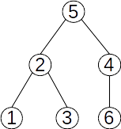
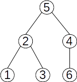
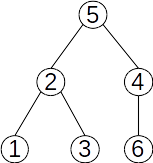

Def:Sunt grafuri neorientate, în care este pus în evidență un nod numit “rădăcină”, care este situat pe nivelul zero. Toate nodurile adiacente Rădăcinii sunt numite descendenți direcți, adică fii, și sunt situate pe nivelul 1, rădăcina fiind considerată tată pentru aceste noduri. Nodurile adiacente nodurilor de pe nivelul 1, în afara celor situate deja în arbore, sunt plasate pe nivelul 2, sunt fii sau descendenți direcți ai nodurilor părinte de pe nivelul unu, și sunt descendenți pentru toate nodurile situate pe niveluri anterioare, și așa mai departe.

*Nodurile care nu au descendenți direcți sunt noduri terminale sau frunze.
*Nodurile cu aceleași tată (ascendent direct) se numesc frați.
*Se numește înălțime arborelui, lungimea celui mai lung lanț de la rădăcină către o frunză sau nivelul maxim din arbore.
*Se numește arbore null/ vid arborele care nu are nici un nod.
 
